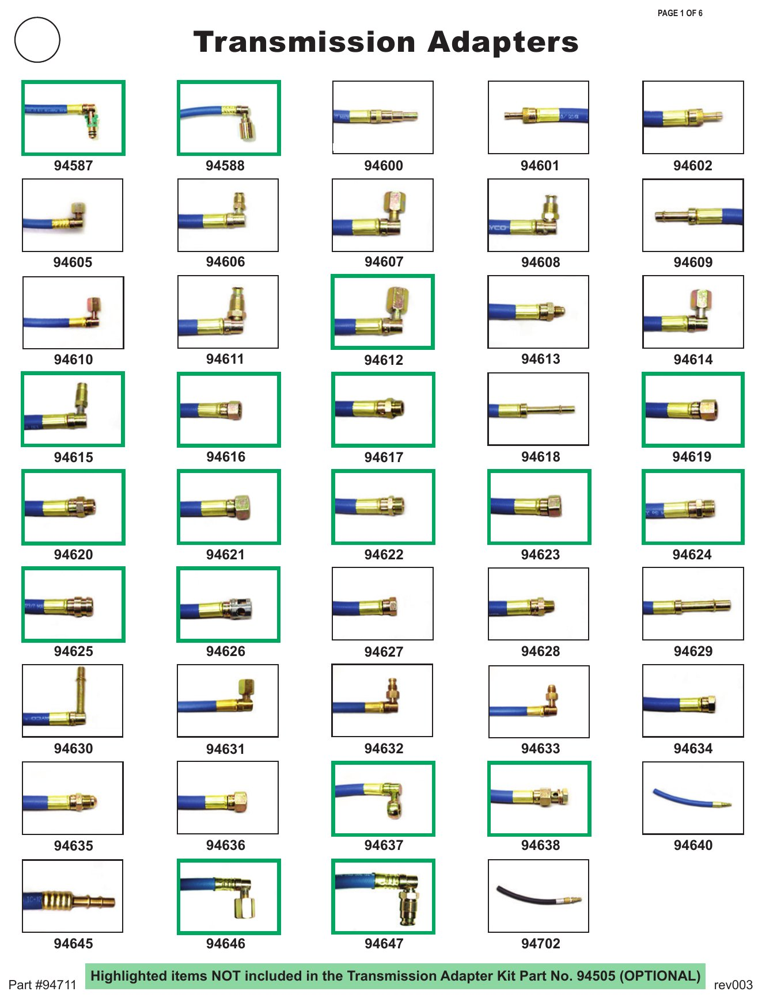
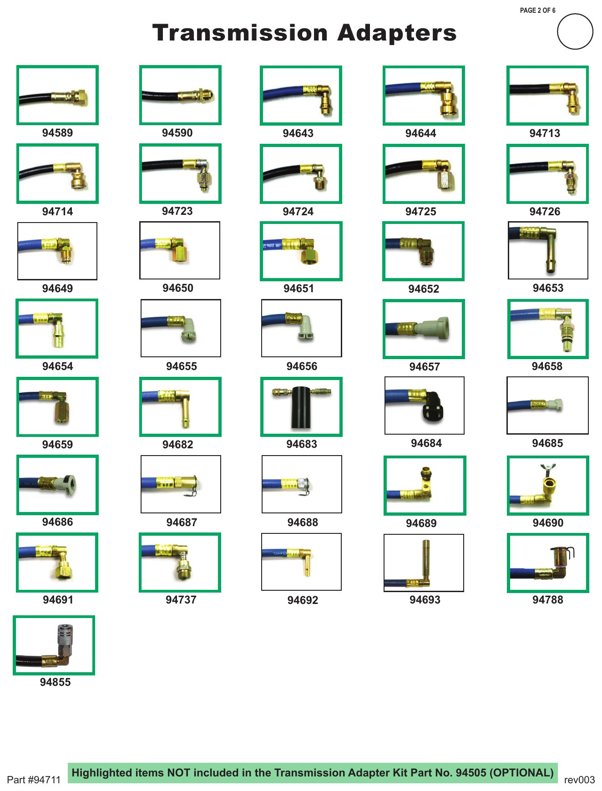
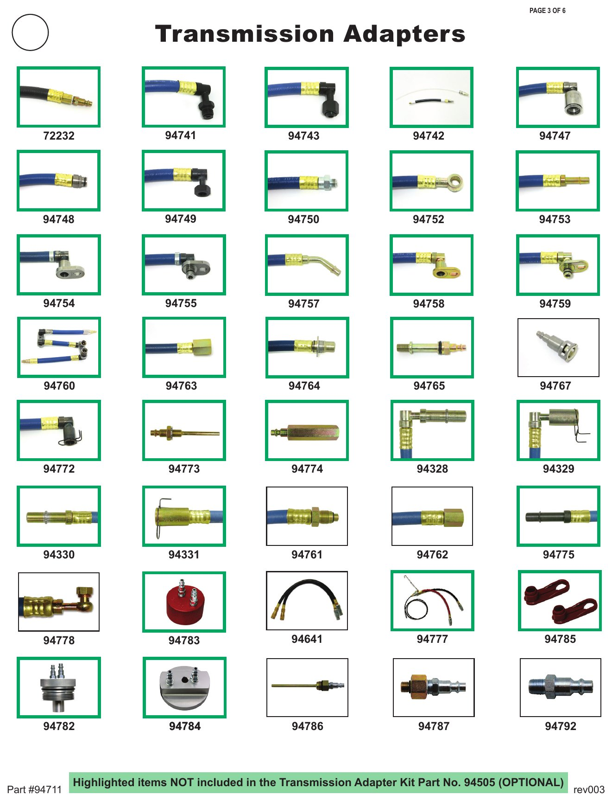
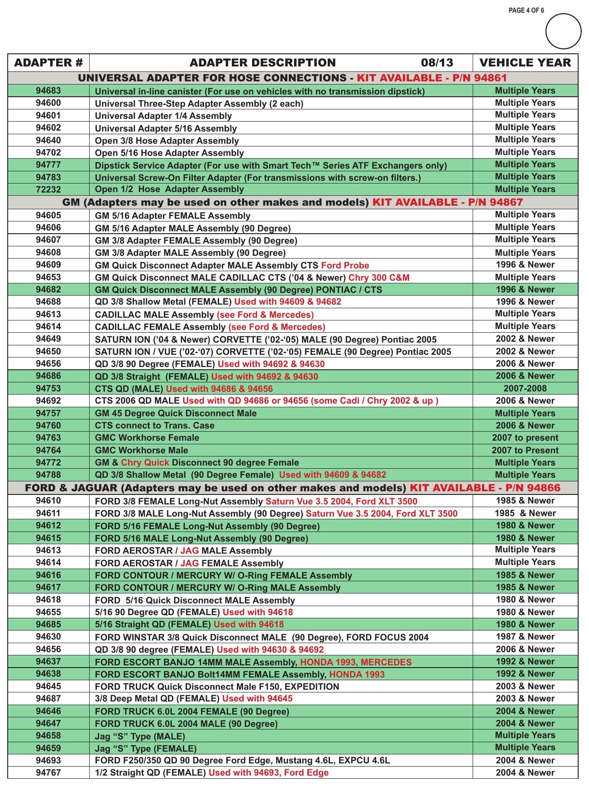
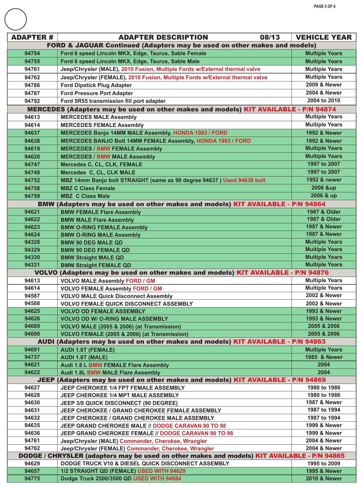
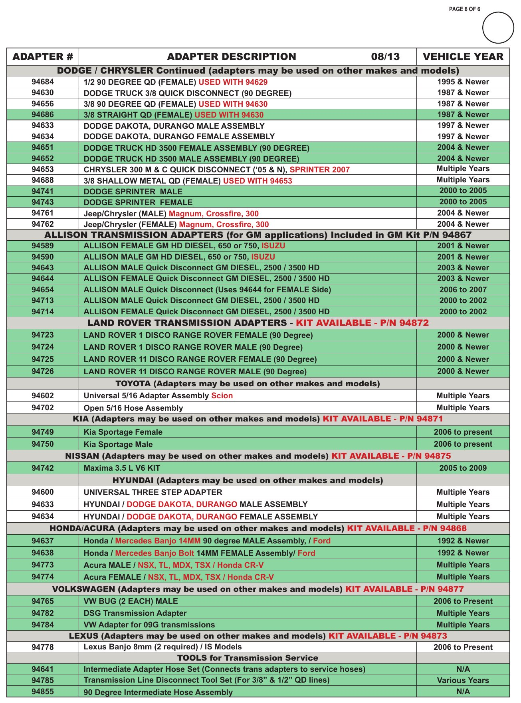

Doc no. MOC-TSB-13-28 // Vol. 13 No. 28 // Sep 26, 2013 // Transmission
Transmission Adapter Kits & 94505 Standard ATF Adapter Kit Updated
New9450594778
MOC has updated the Standard Transmission Adapter Kit (Part No. 94505) by adding 5 new adapters—3 new Ford ATF adapters (Part Nos. 94786, 94787 and 94792) along with 2 new Lexus fill port adapters (Part No. 94778).
What's new
See the attached the revised Transmission Adapter Chart.
In addition, we have developed NEW manufacturer specific transmission adapter kits.
Contact
For more information, contact the Machine & Equipment Department at 866.244.6621.
Part numbers
| Part No. | Description | Notes |
|---|---|---|
| 94861 | Universal Kit | |
| 94873 | Lexus Kit | |
| 94862 | Acura Kit | |
| 94866 | Lincoln/Mercury Kit | |
| 94863 | Audi Kit | |
| 94864 | BMW Kit | |
| 94865 | Chrysler/Dodge Kit | |
| 94874 | Mercedes Kit | |
| 94867 | GM Kit | |
| 94875 | Nissan Kit | |
| 94868 | Hyundai Kit | |
| 94869 | Jeep Kit | |
| 94876 | Volvo Kit | |
| 94871 | Kia Kit | |
| 94877 | Volkswagen Kit | |
| 94872 | Land Rover Kit | |
| 94505 | Standard Transmission Adapter Kit | |
| 94778 | Lexus fill port adapters |
Original attachments
As issued with the bulletin; not redrawn.





